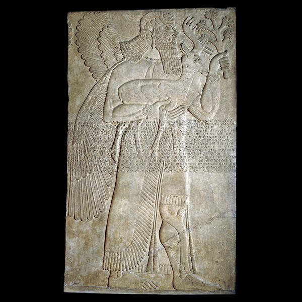

Ancient Near East: Assyrian,
stone panel from the North-West Palace of
Ashurnasirpal II (Room B, no. 30) at Nimrud (ancient Kalhu), northern
Iraq,
883-859 BC: A protective spirit,
relief carved on gypsum, width: 22.5 cm,
height: 13.5 cm.